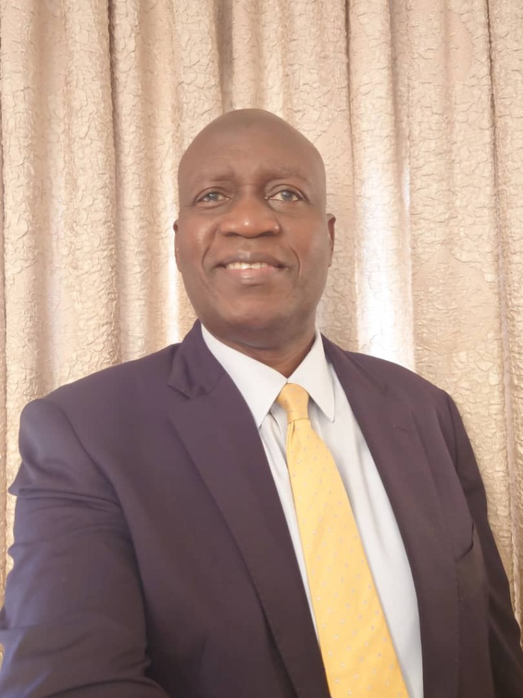
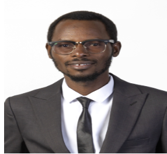
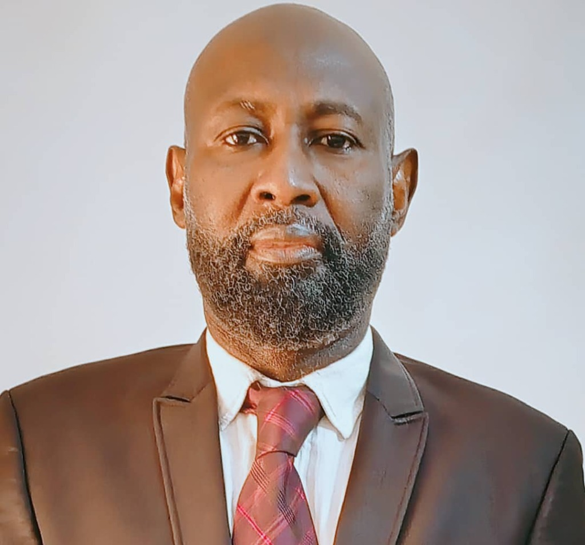
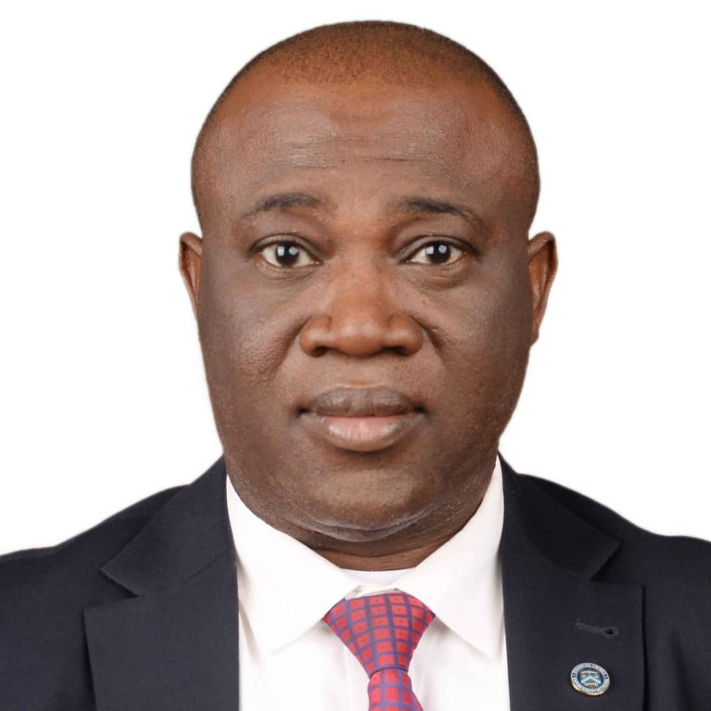
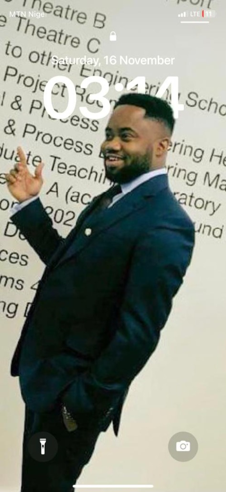
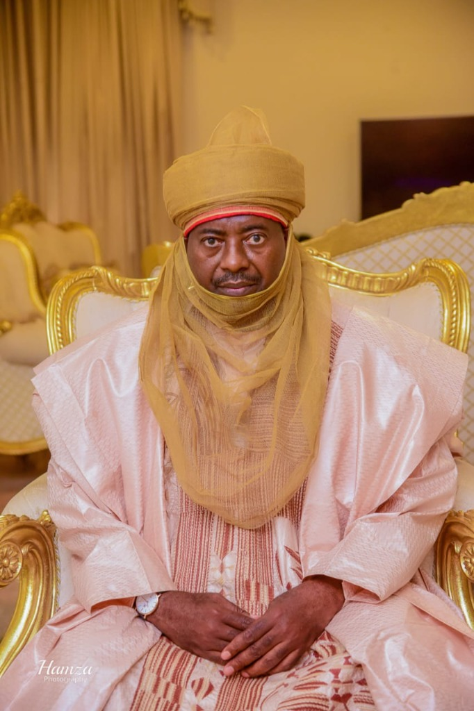
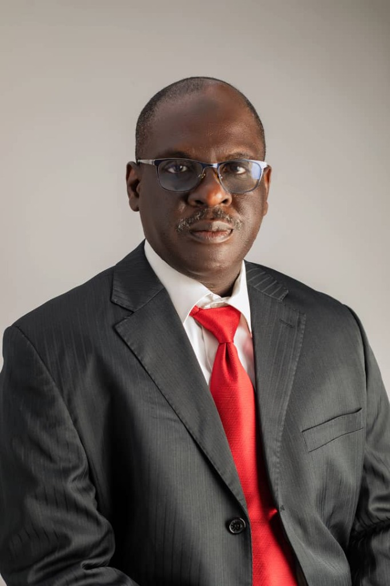

Learn more about our organizational mission, vision, and the executive leadership team steering Specxs Care Limited toward a healthier Africa.
To become a leading biomedical company in Nigeria by pioneering innovative digital healthcare solutions, leveraging cutting-edge biomedical technology and Artificial Intelligence to design advanced medical devices and develop transformative healthcare systems.
To expand universal health coverage, promote indigenous technology-driven biomedical innovations, and ensure affordable, high-quality, and accessible healthcare services throughout Africa and worldwide.
A multidisciplinary team of legal, medical, technical, and process engineering experts.

Barrister Musa has gathered tremendous experience in the oil and gas industry in the past 30 years. He was the pioneer Company Secretary/Legal Adviser of Amni International Petroleum Development Company Limited (AMNI), concession holder of OML 112 and OML 117 and 45% interest in OPL 229, from October 1994 to August 2003. He actively participated in all the various stages of oil & gas E & P, FROM license/lease acquisition, JVAs, JOAs, JV Management Committee Agreements, Joint Operating Committee Agreements, Exploration Agreements, Seismic Acquisition Agreements, Field Development Financing Agreements (Drilling, Completion, Production Testing), Field Equipment Financing and Operations Agreements (Production Platforms, Floating, Storage & Offloading (FSO) Vessel, Pipelines, Compression System (for gas re-injection), Catenary Anchor Leg Mooring (CALM) Buoy, Pipeline Financing, Installation & Maintenance Agreements, FSO Acquisition & Operations Agreements, Crude Sales & Purchase Agreements TO Workovers/Remedial work (sand control, water control, gas control) Agreements.
From July 15, 2021, to November 15, 2024, he was appointed as an Independent Non-Executive Director of Neconde Energy Limited (NEL), an upstream producing company operating Oil Mining Lease (OML) 42 in partnership with NNPC Exploration and Production Limited (NEPL), a subsidiary of Nigeria National Petroleum Company (NNPC) Limited.
He was appointed Legal Adviser by the Federal Government of Nigeria (FGN) as a member of the Legal Committee of the National Council on Privatisation (NCP), under the chairmanship of the Vice President, to review the legal and regulatory framework of the privatisation process including agreements of privatised companies from the past 10 years and advise the government accordingly, from September 16, 2011 to May 29, 2015.
He has worked with the EFCC as Special Assistant to the pioneer Executive Chairman from August 18, 2004, to June 18, 2008. He was Assistant Company Secretary and Head of Registrars Department of Continental Merchant Bank (CMB) PLC from 1991 to 1994.
He graduated with a second class (lower) honours in law from the then University of Sokoto in 1988. He proceeded to Nigeria Law School in Lagos and was called to the bar in December 1989. He has attended various courses, training and conferences in Nigeria and across the globe, and has travelled extensively around the world. He is currently a private legal practitioner based in Abuja.

Pharmacist Isah Dahiru is a digital health innovator, researcher, and Principal Investigator at Specxs Care Limited, a pioneering medical technology company transforming chronic disease management through wearable and assistive devices. A 2024 Mandela Washington Fellow and certified cybersecurity professional, he is passionate about expanding access to safe, affordable, and technology-driven healthcare across Africa.
During the COVID-19 pandemic, Isah founded one of Northern Nigeria’s first online pharmacies, which ensured uninterrupted access to essential medicines and remote pharmaceutical care at a critical time. As a student, he served as President of the Pharmaceutical Association of Nigeria Students (PANS) at Ahmadu Bello University, Zaria, where he championed student leadership and health advocacy initiatives that impacted thousands of young people.
His innovative work has earned numerous national recognitions, including the 2023 Nigerian Communications Commission Assistive Technology Award, the 2019 Emerging Technologies National Innovation Award by the Digital Bridge Institute, and several distinctions for leadership and research excellence.
Driven by a vision to make advanced healthcare accessible to all, Isah integrates his expertise in pharmacy, public health, and biomedical innovation to lead Specxs Care Limited toward a future where technology and care work seamlessly to improve lives across Africa.

Adamu Sambo is a seasoned public health supply chain management expert with over 20 years of progressive experience. He has provided strategic advisory and technical leadership to governments, donors, and partners across Nigeria and West Africa, with proven success in health system design, capacity building, and data-driven decision-making.
His professional journey includes leading roles with organizations such as Global Environment & Technology Foundation (GETF), Crown Agents UK, i+ Solutions Netherlands, International Medical Corps USA, John Snow Inc., and Médecins Sans Frontières (MSF). He has successfully supported USAID, Global Fund, ECHO, FCDO, and other donor-funded programs, strengthening national and sub-national supply chains for HIV/AIDS, Malaria, TB, vaccines, reproductive health, and essential medicines.
His project highlights include acting as Project Coordinator (Data Support) for Project Last Mile (USAID/GETF) in Sierra Leone, supporting baseline data assessments, mSupply integration, and KPI dashboard management. He also served as a Supply Chain Consultant with Crown Agents UK, strengthening inventory systems for Global Fund commodities in Sierra Leone.
As Technical Advisor/Data Manager in the Saving Lives 2 project in Sierra Leone, he led the rollout and optimization of DHIS2 and mSupply systems nationwide. He supported the Nigeria Supply Chain Integration Project (NSCIP) by deploying LMIS tools across 36 states, building capacity of over 70 state-level officers.
Adamu has also overseen logistics and procurement for International Medical Corps during the Northeast Nigeria humanitarian crisis, and provided technical support under the USAID PEPFAR/SCMS Project, ensuring uninterrupted supply of ARVs and HIV test kits across Nigeria.

Joseph Nuhu Maigari is a founding staff member of the Economic and Financial Crimes Commission (EFCC), Nigeria and served for over 22 years, where he has done innovative work in many spheres relating to Economic and Financial Crimes.
He holds a PhD in Security and Strategic Studies from Nasarawa State University, Keffi and is also a fellow of the Netherlands Fellowship Programme (NFP) at the Maastricht University, Graduate School of Governance where he obtained MSc (short course) in Public Policy Analysis.
Dr. Maigari attended courses at the Greater Manchester Police Academy, UK, International Law Institute, Washington DC, USA and the International Law Enforcement Academy (ILEA), Gaborone, Botswana.
He has also served as a Research Assistant to the Netherlands Relief Association in collaboration with Kaduna State Leprosy and Tuberculosis Control Programme on an Intervention Study in Kaduna State in 1998.

A highly motivated and results-oriented Process Engineer with an MSc in Petroleum Production Engineering from the University of Leeds, United Kingdom, and a Bachelor’s degree in Chemical Engineering from the University of Maiduguri. A registered Member of the Nigerian Society of Engineers (MNSE), with extensive experience spanning the consulting, oil and gas, healthcare, and public sectors.
Currently serving as the General Manager of Specxs Care Limited, providing strategic leadership in project execution, procurement, technical support services, resource allocation, and day-to-day operational management. Previously held technical and analytical roles at the Nigerian Extractive Industries Transparency Initiative (NEITI), where responsibilities included oil and gas data analysis, stakeholder engagement, and the development of production and utilization templates to support transparency and accountability within the extractive sector.
Possesses strong analytical, organizational, and problem-solving skills, with proven expertise in project coordination, monitoring and evaluation, technical reporting, and stakeholder management. Demonstrates excellent communication and interpersonal abilities, with a track record of working effectively both independently and within multidisciplinary teams to achieve organizational goals.
Musa Mohammed BA is a Director of Specxs Care Limited, a company dedicated to advancing health and wellness solutions. With over 30 years of experience in a government regulatory agency, he brings a deep understanding of public health standards, policy implementation, and quality assurance. His leadership combines regulatory expertise with a passion for improving community well-being through innovative wellness initiatives. At Specxs Care Limited, he drives strategic growth and ensures the company’s commitment to excellence in every aspect of its operations.

Aliyu Galadima Saidu, PhD is a Non-Executive Director of Specxs Care Limited. He is a retired Deputy Comptroller-General (DCG) of the Nigeria Customs Service (NCS) and a respected leader in public service and traditional governance. During his distinguished service at the NCS, he held strategic leadership roles in ICT and Human Resource Management, centering his work on Customs Modernization, Paperless Trade Facilitation, and Risk-based Enforcement Systems.
An alumnus of the Harvard Kennedy School of Government, the Saïd Business School of Oxford University, and Imperial College London, he holds a B.A. in History from the University of Sokoto, an Advanced Diploma in Management Studies from Usmanu Danfodiyo University, an M.A. in History & Strategic Studies from the University of Lagos, and a PhD in International Relations and Strategic Studies from the University of Calabar.
His multi-disciplinary expertise spans ICT, Risk Management, Customs Reforms, and Human Development. He also holds the traditional title of Galadiman Nupe and serves as a key member of the Bida Emirate Council, contributing actively to cultural preservation and community development in Niger State.

Alhaji Usman Aliyu Auna brings to the Board of Specxs Care Limited, seasoned leadership with extensive experience in high level management, policy formulation, and strategic procurement expertise. After 35 years of meritorious public service in the Nigeria Immigration Service, Alhaji Auna retired as a Deputy Comptroller General (DCG). While in the Nigeria Immigration Service, he held several sensitive positions which included Head of Investigation & Compliance, and Head of Procurement/Secretary, Immigration Service Tenders Board. He is married with Children.
Usman Usman Liman is a Non-Executive Director at Specxs Care Limited. He brings corporate governance experience and strategic guidance to the board, ensuring high standards of operational excellence and corporate compliance across all healthcare ventures.